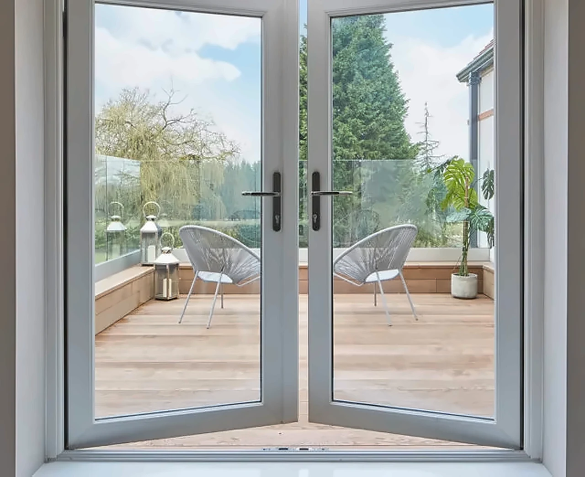

Real image from vtechwindows.com · Inward opening image used on VTech’s product page (and outward opening)
01 Casement Windows
Inward Outward Opening Windows
Hollow, multi-chambered uPVC profiles with segregated drainage and galvanised steel reinforcement. Outward-opening units save interior space and leave the internal sill usable, and the opening can be restricted for added security.
- Mitred glazing beads for a cleaner finish
- Single or double glazing
- EPDM weather and glazing seals
- Corrosion-resistant fittings
- Pile seals and single- or multi-point locks help keep out dust
Published specifications
- Frame wall
- approx. 2.0 mm
- Steel reinforcement (outward)
- 1.2 – 3.0 mm